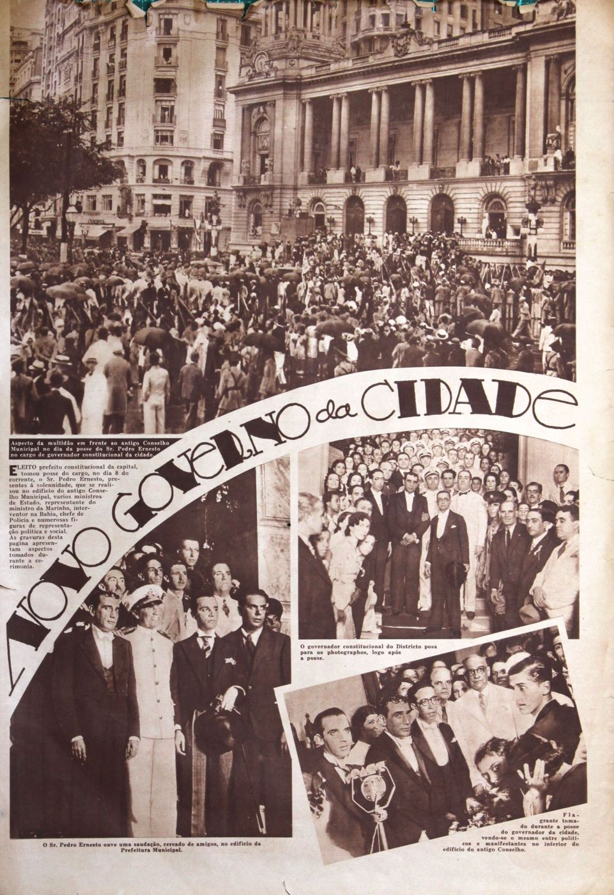
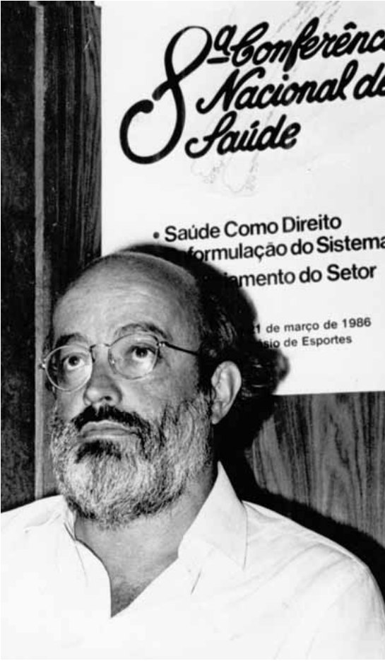
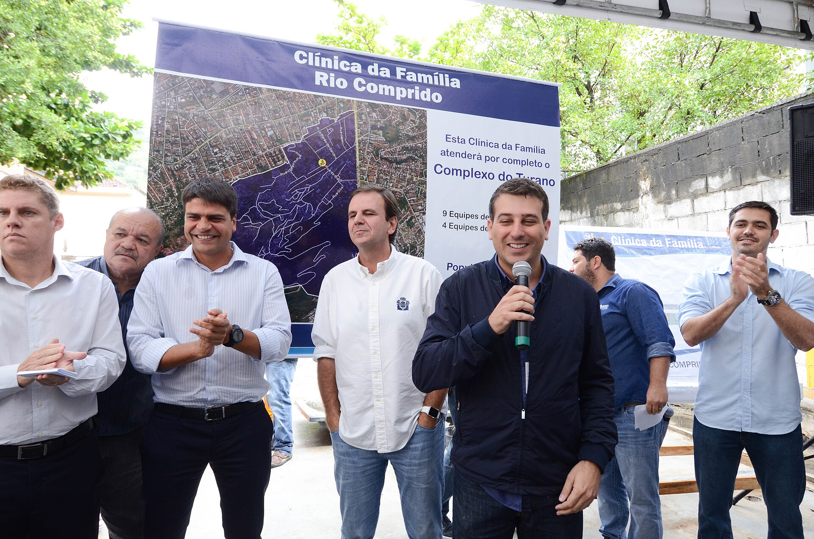
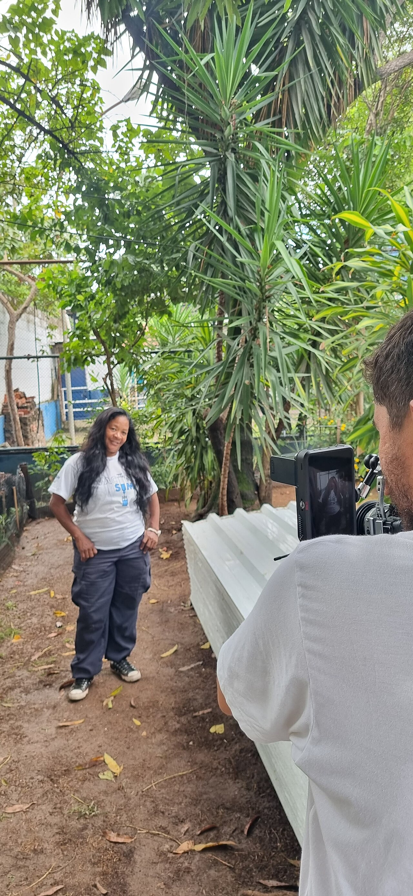

O capítulo resgata a história da Atenção Primária à Saúde (APS) no município do Rio de Janeiro para mostrar que indicadores de saúde só fazem sentido quando lidos dentro da história de cada lugar. E que a expansão das Clínicas da Família, a partir de 2009, não começou do zero.
Arquivo · 1900–2020
Linha do tempo da APS carioca
Escolha um período e toque nos anos. Cada ficha traz o que o capítulo conta e, quando existe, uma imagem de acervo da época.
Jogo da memória da cidade
Como se chamava?
Entre 1907 e os anos 1930, o Rio ganhou uma ampla rede de hospitais. Muitos mudaram de nome. Tente lembrar e vire a ficha para ver o nome de hoje.
Fonte: Fernandes, Santos e Guimarães (2022), a partir de Sanglard (2008), Vieira (1982) e Campos (2006).
Anos 1930–1960
Dois modelos em disputa
Na era Vargas, o país dividiu a saúde: a saúde pública ficou com o Ministério da Educação e Saúde, e a assistência médica dos trabalhadores formais, com a Previdência. O legado no Rio foi uma grande rede de hospitais e poucos Centros Municipais de Saúde.
Educação sanitária e prevenção
- Centros de Saúde por distrito sanitário
- Foco em tuberculose e saúde materno-infantil
- Enfermeiras visitadoras formadas na Escola Anna Nery
- Para a população mais pobre
Hospitais e ambulatórios dos IAPs
- Institutos de Aposentadoria e Pensões por categoria
- Hospitais dos bancários, comerciários, marítimos
- Cuidado individual, fragmentado e especializado
- Só para quem tinha carteira assinada

Alma-Ata, URSS · 1978
“Saúde para Todos no ano 2000”
A Conferência Internacional sobre Cuidados Primários de Saúde apresentou, pela primeira vez, o conceito de Atenção Primária à Saúde: integral, contra o cuidado centrado no hospital. Pouco depois, agências internacionais responderam com uma versão “seletiva”, um pacote de quatro itens. Toque nas letras.
Fonte: capítulo, a partir de Pires-Alves (2010). A APS seletiva foi formulada por Fundação Rockefeller, Banco Mundial, Unicef e USAID.
1980–1988
A atenção básica chega aos bairros
Inspirada em Alma-Ata, a Secretaria Municipal lançou em 1980 o Plano de Ação Integrada. Surgiram as UACPS e UMAMPS e, a partir de 1986, uma rede de 27 Postos de Saúde, concentrada na Zona Oeste. Escolha um grupo para acender os bairros.
Fonte: capítulo, a partir de Campos, Cohn e Brandão (2016).
1986–1995
Da 8ª Conferência ao Saúde da Família
A 8ª Conferência Nacional de Saúde (1986) consagrou um sistema que leva em conta as condições de vida. Vieram o SUS (Lei 8.080/1990), o Programa de Agentes Comunitários de Saúde (1991) e o Programa Saúde da Família (1994). No Rio, a primeira equipe de Saúde da Família foi experimental, na Ilha de Paquetá.

2001–2008
O plano de Arouca e a realidade
Em 2001, como secretário municipal por pouco mais de seis meses, Sergio Arouca propôs expandir a Saúde da Família até cobrir 60% do território. O plano parou com sua saída. Sete anos depois, a cobertura era mínima.
Fontes: capítulo, a partir de Lima (2014), OPAS (2013), Howe et al. (2016) e Soranz et al. (2016).
Tinha um planejamento do Arouca muito forte para a expansão do Saúde da Família no Rio de Janeiro, com a base territorial forte, que nada mais é o que a gente fez em 2009.
Daniel Soranz, Seminário Testemunho sobre a História da APS no Estado do Rio de Janeiro (2019)

2009–2020
Expansão, desmonte e pandemia
A partir de 2009, a cidade apostou na Estratégia Saúde da Família, com Clínicas da Família e a Carteira de Serviços (2011). Entre 2017 e 2020 vieram precarização, atrasos salariais, demissões e fechamento de unidades. A população mais vulnerável chegou à pandemia de Covid-19 com a rede desorganizada.
Clínicas da Família fechadas na Zona Oeste em 2017, região de maioria negra e que mais sofre com a falta de profissionais.

Podemos observar ao longo desse panorama histórico […] a importância, a força e a necessidade que a rede de APS tem no pensar e fazer saúde da população, principalmente para os mais vulneráveis.
Fernandes, Santos e Guimarães, APS+10 (2022)